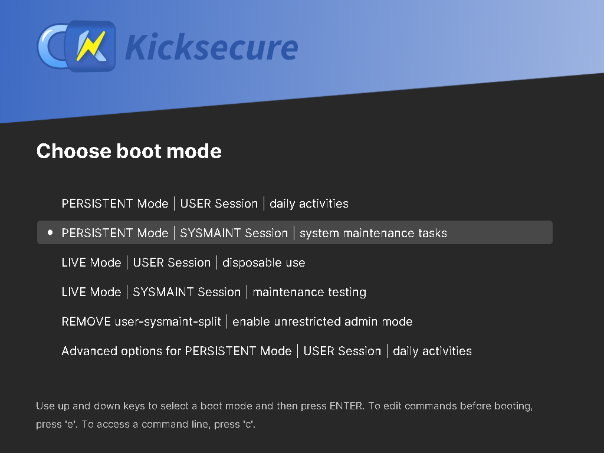
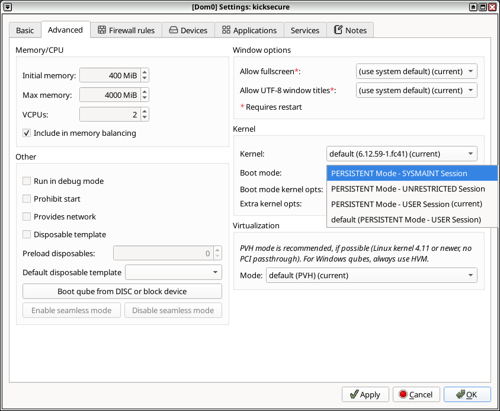
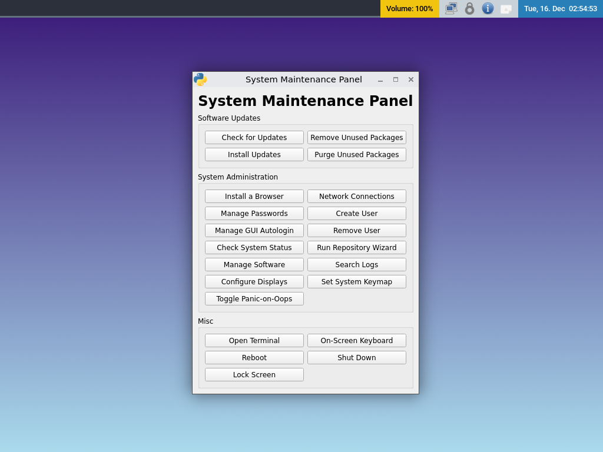
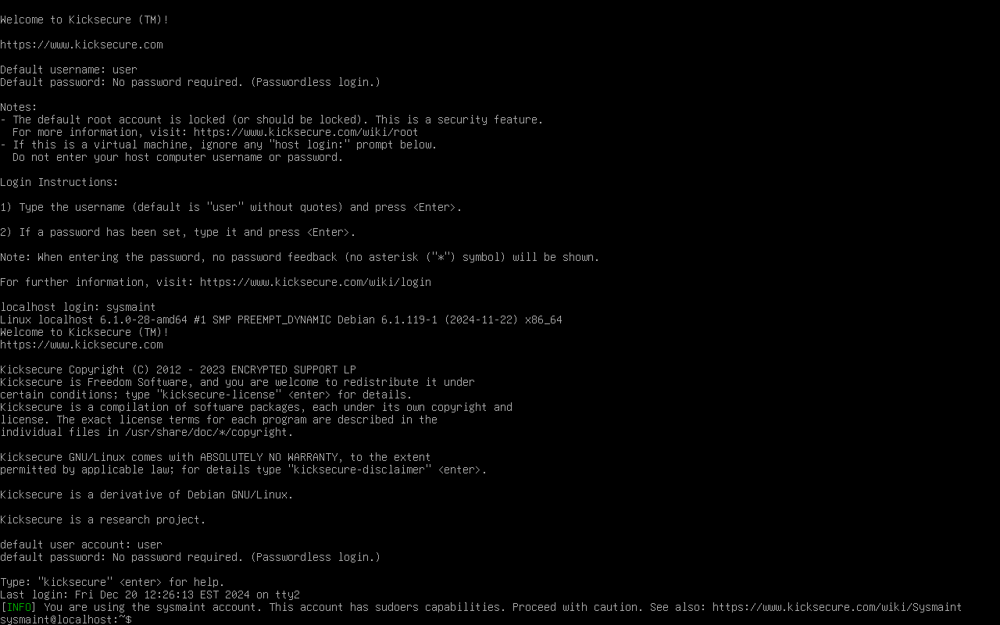
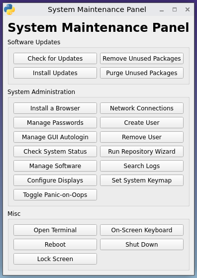

We believe security software like Kicksecure needs to remain Open Source and independent. Would you help sustain and grow the project? Learn more about our 11 year success story and maybe DONATE!
RootDocumentationunrestricted admin modePrevious page: RootIndex page: DocumentationNext page: unrestricted admin modesysmaint - System Maintenance User
- Default Passwords
- Passwords
- Account Management
- Login
- Login Spoofing
- Safely Use Root Commands
sysmaintAccount- System Maintenance Panel
- Unrestricted Admin Mode
- Protection against Physical Attacks
- User Account Isolation (developers)
user-sysmaint-split (developers)- Polkit (formerly PolicyKit) /
pkexec - privleap /
leaprun
- Overview: Sysmaint, or system maintenance, is an account
created by the
user-sysmaint-splitfeature. It increases security by separating daily activities from administrative tasks. - Default: Kicksecure-LXQt and Kicksecure-Qubes comes with
user-sysmaint-splitby default. - Accounts: There are two accounts:
user: For daily activities.sysmaint: For system maintenance administrative activities, such as installing software or upgrading.
- Recommended administrative access: For administrative tasks
(for example, using
sudoorpkexec), reboot into thesysmaintsession (PERSISTENT Mode | SYSMAINT Session | system maintenance tasks) and run the command there. - Troubleshooting: If you see the following errors, you are
most likely in the
usersession:
permission denied: sudopermission denied: pkexec- Fix: Reboot into the
sysmaintsession and retry the command. - Advanced opt-out: Unrestricted Admin Mode disables
userandsysmaintseparation and restores a more traditional setup where theuseraccount can use administrative tools such assudoorpkexecwithout using asysmaintsession. This is generally not recommended, because it removes the security benefits ofuser-sysmaint-split. - Older versions: For older versions, refer to Version Overview for upgrade information.
Screenshot
Image: Kicksecure - sysmaint Boot Option in GRUB Boot Menu

Image: Kicksecure - sysmaint Boot Option in Qubes VM Manager (QVMM)

Overview: What is sysmaint and Why Should I Care?
Kicksecure comes with a security feature called user-sysmaint-split enabled by default
(in graphical user interface (GUI) (LXQt) version
and Qubes version). This feature creates two separate user accounts:
user- for daily activities like browsing, writing documents, etc.sysmaint- short for system maintenance; used for tasks that require administrative rights such as installing or updating software.
This separation improves security. For example, if malware
compromises your web browser in the user session, it will
not have permission to make critical system changes or install rootkits
(malicious software that can hide in the system).
You only use the sysmaint account when you want to
change system behavior, such as adding new programs, applying updates,
or performing administrative tasks.
- Recommended: For administrative actions, boot into the
sysmaintsession and run the command there. - Advanced opt-out: The opposite of
user-sysmaint-splitis Unrestricted Admin Mode, which disablesuserandsysmaintseparation and restores a more traditional setup where theuseraccount can use administrative tools likesudo,su,lxsudo,pkexecdirectly. This is less secure and not enabled by default, but it can be configured if it better suits your use case.
Real-World Example Use Cases
- You want to install a new application:
- Reboot into the
sysmaintaccount to perform the installation. - Once done, reboot back into your regular desktop account.
- Reboot into the
- You want to install system updates:
- Boot into
sysmaintmode and run the updates from the System Maintenance Panel.
- Boot into
- You want to avoid malware affecting system
settings:
- Use your regular
useraccount for browsing and daily work. Since it does not have admin access, it is harder for malware to deeply damage your system.
- Use your regular
Default Installation Status
- Old versions: Kicksecure build version up
to version
17.2.8.5will not automatically includeuser-sysmaint-split. However, users can choose to install it manually (see #Installation). - New versions:
- graphical user interface
(GUI): Includes
user-sysmaint-splitby default. - command line interface (CLI):
The
kicksecure-*-climeta packages do not includeuser-sysmaint-splitby default. - servers:
user-sysmaint-splitis not installed by default on servers. - Distribution Morphing: Not installed by default. Might be installed by default for the GUI version in a future Release Upgrade.
- graphical user interface
(GUI): Includes
Version Overview
graphical user interface (GUI) versus command line interface (CLI).
Feature |
Kicksecure LXQt (GUI) |
Kicksecure CLI |
|---|---|---|
|
Yes, installed by default in new images. |
No, not installed by default. |
Old Versions |
No, will not be automatically installed to avoid breaking existing user workflows. |
No,
not applicable, will remain |
New Images |
Yes,
will come with |
No,
|
No,
|
No,
|
|
Opt-Out |
Yes, supported via Unrestricted Admin Mode. |
Yes |
Opt-In |
Yes,
|
Yes |
Installation
Install package(s) user-sysmaint-split sysmaint-panel
following these instructions:
1 Platform specific notice.
- Kicksecure: No special notice.
- Kicksecure-Qubes: In Template.
2 Update the package lists and upgrade the system.
sudo apt update && sudo apt full-upgrade
3
Install the user-sysmaint-split sysmaint-panel
package(s).
Using apt command line --no-install-recommends option is in
most cases optional.
sudo apt install --no-install-recommends user-sysmaint-split sysmaint-panel
4 Platform specific notice.
- Kicksecure: No special notice.
- Kicksecure-Qubes: Shut down Template and restart App Qubes based on it as per Qubes Template Modification.
5 Done.
The procedure of installing package(s)
user-sysmaint-split sysmaint-panel is complete.
Usage
1 Platform specific.
Select your platform.
Kicksecure
2 Notices.


- Privilege escalation tools restricted: When
user-sysmaint-splitis installed, the accountusercan no longer use privilege escalation tools (sudo,su,pkexec) when logged into any account other thansysmaint. - Immediate effect: This change takes effect immediately.
- System maintenance workflow: To perform system maintenance
tasks such as checking for software updates or installing updates,
reboot into the
sysmaintaccount. - Reduced attack surface: To reduce attack surface, most
superfluous background services are suppressed while booted into the
sysmaintaccount. - Minimal session by design: The
sysmaintdesktop session is intentionally minimal and not suited for normal desktop use. This is to discourage using it for work that has a higher risk of causing a difficult-to-avoid system compromise (such as web browsing). Quick shortcuts are provided for simple software management and system administration tasks, while more advanced tasks can be performed from a terminal. Thesudoandpkexeccommands will be usable here. - Virtual console login: When booted in
PERSISTENT Mode | SYSMAINT Session | system maintenance tasks, you can also log into thesysmaintaccount from a virtual console (tty) by enteringsysmaintat the login prompt. This session behaves identically to a typical virtual console session. A short informational message will be printed after login reminding you that thesysmaintaccount must be used with caution.
3 Restart the system normally.
4
Select
PERSISTENT Mode | SYSMAINT Session | system maintenance tasks
from the boot menu.
Figure: Persistent Mode - Sysmaint Session - GRUB Boot Menu Option
5 The system will boot into a minimal desktop session with the System Maintenance Panel running.
Figure: System Maintenance Panel

6 Perform your system maintenance tasks.
7 Once you are done, click "Reboot" to reboot the system.
8
Boot into PERSISTENT Mode | USER Session | daily activities
or LIVE Mode | USER Session | disposable use. This will
provide you with a standard desktop session.
9 Done.
The procedure is now complete.
Kicksecure for Qubes
2 Qubes version specific.
Select your Qubes version.
Qubes R4.2
3 Notice.
- In Qubes OS R4.2 and earlier:
- Status: Kicksecure for Qubes cannot be booted into sysmaint session.
- Benefit:
user-sysmaint-splitis still useful in Qubes VMs because it makes SUID privilege escalation tools (sudo,su,pkexec) inaccessible for accountuser. - Upgrade recommended: See Kicksecure 18 for Qubes Released! Major Release Upgrade! (Similar to derivatives such as Qubes-Whonix 18 Released! Major Release Upgrade!)
- Administrative actions: Follow the instructions below to
perform administrative actions and to use
sudo,su,pkexec.
4 Administrative actions.
You can access the root account by opening a Qubes Root
Console.
Qubes R4.3
3 Notices.
Qubes OS R4.3 and later:
- Boot modes support: Supports boot
modes.
- Boot modes usage: Kicksecure for Qubes uses boot modes to
allow any Kicksecure Qube to be booted in either
PERSISTENT Mode | USER Session | daily activitiesorPERSISTENT Mode | SYSMAINT Session | system maintenance tasks.
- Boot modes usage: Kicksecure for Qubes uses boot modes to
allow any Kicksecure Qube to be booted in either
- Template: The
kicksecure-18Template boots inPERSISTENT Mode | SYSMAINT Session | system maintenance tasksby default. - App Qubes:
KicksecureApp Qubes and Disposables boot inPERSISTENT Mode | USER Session | daily activitiesby default. - Changing boot modes: Boot modes can be changed. See below.
- Comparison with non-Qubes: Optional reading and comparison notes.
- Definition: non-Qubes means not using Qubes, such as using Kicksecure on hardware.
- Similarity:
PERSISTENT Mode | USER Session | daily activitiesandPERSISTENT Mode | SYSMAINT Session | system maintenance tasksare mostly functionally identical under Qubes OS. - Key differences: Under Qubes OS,
PERSISTENT Mode | SYSMAINT Session | system maintenance tasksdiffers in the following ways:- Default user account: The default user account for most
actions is changed to
sysmaint. - URL opening disabled: Potentially dangerous operations such as opening URLs are disabled.
- System Maintenance Panel: The System Maintenance Panel is usable.
- Privilege escalation usability: Privilege escalation tools
are easily usable, since the
sysmaintaccount will be provided rather than theuseraccount.
- Default user account: The default user account for most
actions is changed to
- Non-standard boot mode: It is possible to boot a Kicksecure
Qube in a non-standard boot mode, such as booting a Template in
PERSISTENT Mode | USER Session | daily activitiesor booting an AppVM inPERSISTENT Mode | SYSMAINT Session | system maintenance tasks. To do so, change the boot mode of the Qube before starting it.
4 Instructions.
Qubes R4.3 (and above) boot mode changes.
1 Ensure the Qube is shut down.
2 Open Qube Manager.
Start menu → Gear icon →
Qubes Tools → Qube Manager
3 Click on the VM you wish to change the boot mode of.
4 Click "Settings" in the toolbar.
5 Click the "Advanced" tab in the Settings window.
6 In the "Kernel" section, change "Boot mode" to your desired boot mode.
7 Click "OK" in the Settings window.
8 Start the Qube. It will boot in the selected boot mode.
9 Done.
The procedure of switching the boot mode for a Qube is now complete.
5 Done.
Fast User Switching
1 Platform specific.
Select your platform.
Kicksecure
2 Notice.
Reboot into sysmaint session is required, as
documented above.
Note: It is unsupported to switch from account
user to sysmaint using Start Menu
→ Power button → logout.
This is a security feature. [1]
Kicksecure for Qubes
2 Notice.
Not applicable.
Running services in sysmaint sessions
When booted in
PERSISTENT Mode | SYSMAINT Session | system maintenance tasks,
only the minimum services needed for the session to be usable are
started by default. New services are prevented from automatically
starting during APT software upgrades.
While enabling additional services within the sysmaint session is generally discouraged, it may be necessary in some situations. Services can be started either temporarily for one sysmaint session, or persistently for all sysmaint sessions.
To start a service for the current sysmaint session:
Note: Replace service-name in the below steps
with the name of the service you are starting. For instance, if you are
configuring openvpn.service, replace all instances of
service-name with openvpn.
1
Open a terminal by clicking Open Terminal in the System
Maintenance Panel.
2
Type sudo systemctl start service-name.service
3 Done.
The procedure of starting a service for one sysmaint session is complete.
To enable a service persistently, so that it autostarts on every sysmaint session boot:
Note: Replace service-name in the below steps
with the name of the service you are configuring. For instance, if you
are configuring openvpn.service, replace all instances of
service-name with openvpn.
1
Open a terminal by clicking Open Terminal in the System
Maintenance Panel.
2
Navigate to the directory containing the systemd unit for the service
you wish to enable. Usually, this will be
/usr/lib/systemd/system or
/etc/systemd/system.
3
Create a new configuration directory for the service by running
sudo mkdir -p service-name.service.d.
4
Enter the directory you just created by running
cd service-name.service.d.
5
Create a new configuration file for the service by running
sudo nano 99_sysmaint-enable.conf.
6 Type the following lines into the configuration file:
[Install] WantedBy=sysmaint-boot.target
7
Press Ctrl+S to save the file, then press
Ctrl+X to exit the text editor.
8
Reload systemd unit configuration files by running
sudo systemctl daemon-reload.
9
Fully enable the service by running
sudo systemctl enable service-name.service.
10
Ensure the systemctl enable command outputs the following
notice. If you see this, it indicates that the service has been
successfully enabled.
Created symlink /etc/systemd/system/sysmaint-boot.target.wants/service-name.service → /lib/systemd/system/service-name.service.11
Start the service in the current sysmaint session by running
sudo systemctl start service-name.service.
12 Done.
The procedure of persistently enabling and starting a service in sysmaint sessions is now complete.
Notes
sysmaintaccount restrictions: Several restrictions are imposed to reduce the risk of thesysmaintaccount becoming compromised:- Locked access depending on boot mode: The
sysmaintaccount is locked and cannot be logged into when booted into modes other thanPERSISTENT Mode | SYSMAINT Session | system maintenance tasks. - Session limitation: Logging into the
sysmaintaccount using anything other than the specialsysmaintdesktop session is prohibited. - Prohibition of other logins: When booted in
PERSISTENT Mode | SYSMAINT Session | system maintenance tasks, you will be prevented from logging into accounts other thansysmaint.[2] - Inhibition of non-critical services: When booted in
PERSISTENT Mode | SYSMAINT Session | system maintenance tasks, only the minimum services needed for the session to be usable are started by default. New services are prevented from automatically starting during APT software upgrades.
- Locked access depending on boot mode: The
Questions and Answers
- Why is there a separate
sysmaintaccount?
- Why is it required to boot into
sysmaintmode, why not simply log out (Start Menu→Power button→Logout) and log into accountsysmaint? (Fast User Switching)- This is to mitigate login
spoofing attacks and to prevent
sudopassword sniffing.
- This is to mitigate login
spoofing attacks and to prevent
- How to go back to unrestricted admin mode, where account
usercan usesudo?- See #Uninstallation.
user-sysmaint-split - GUI vs CLI - Default Installation Status Differences
user-sysmaint-split is different for the
graphical user interface (GUI) versus the
command line interface (CLI) version.
In the future, the CLI version will be improved to be more suitable for servers.
Server support for user-sysmaint-split, however, is not
as sophisticated yet as it is for the GUI version. For some server use
cases, user-sysmaint-split may be less needed or unneeded.
This topic is elaborated in the development chapter user-sysmaint-split Server
Support.
Applications requiring Administrative Rights during User Session
If it is unsuitable to run some applications in the sysmaint session,
then this could be difficult. This is because historically, Freedom
Software Linux desktop distributions did not have a strong user-sysmaint-split.
There might be many cases where applications should be run in the
user session, but this is not possible because some aspect of the
application requires administrative
("root") rights.
Options:
- A)
privleapcustom actions: If it is possible to do this on the command line interface (CLI), Advanced Users could consider configuring privleap custom actions. - B) Unrestricted admin mode: This mode disables the separation between the user and system maintenance roles, allowing the user to directly perform administrative tasks without needing to switch contexts. It provides more flexibility for tasks requiring elevated privileges but at the cost of reduced compartmentalization and security. This approach might be more suitable in environments where usability or workflow requirements outweigh the benefits of strict privilege separation. See Uninstalling user-sysmaint-split and Enabling Unrestricted Admin Mode.
- C) Use multiple virtual
machines (VM): For compartmentalization. VMs that
require administrative ("
root") rights could use Unrestricted Admin Mode. Others could keepuser-sysmaint-split.
Advanced Topics
For Advanced Users.
Enable sudo access in user session
1 Warnings.
- Intended audience: For debugging or advanced users only.
- Security warning: Enabling
sudoaccess during user session can be a security issue. - Recommendation: This is often unnecessary. Uninstallation of the
user-sysmaint-splitpackage might be better.
2
Boot into
PERSISTENT Mode | SYSMAINT Session | system maintenance tasks.
Setting this up requires booting into sysmaint
session.
3
Create file
/etc/privleap/conf.d/privleap-debugging.conf.
sudo append-once /etc/privleap/conf.d/privleap-debugging.conf "\ [action:sudo] Command=chmod o+x /usr/bin/sudo
- Command=/usr/libexec/helper-scripts/sudo-tools-enable
AuthorizedGroups=sudo AuthorizedUsers=user "
4
Boot into
PERSISTENT Mode | USER Session | daily activities.
5
Enable sudo.
leaprun sudo
6 Notice.
The above command can be run whenever required to enable
sudo.
sudo access will be automatically disabled after
installing or removing a package using APT. This is because this
triggers SUID Disabler and Permission Hardener, which will
re-disable sudo, unless an
/etc/permission-hardener.d configuration folder snippet
gets added.
7
Use of sudo.
sudo can be used normally. For example:
sudo touch /etc/testfile
8 Done.
The process is complete.
Uninstallation
See Uninstalling user-sysmaint-split and enabling Unrestricted Admin Mode.
Known Issues
- Compatibility issues: Known application compatibility
limitations and related forum discussions.
- Additional documentation: In case of compatibility issues, see also section Applications requiring Administrative Rights during User Session.
- ZuluCrypt: ZuluCrypt not working in user session
- VeraCrypt: VeraCrypt
containers do not open
- Related discussion: Whonix user isolation (user-sysmaint-split) breaks VeraCrypt workflow
- Usability: Struggling with the point release update - user-sysmaint-split - sudo
- ProtonVPN: Can't open Proton VPN in Kicksecure 18
- Security issues: Upstream or platform issues that may affect
Kicksecure users.
- Qubes potential local privilege escalation: harden
insecure permissions inside
/dev/xenfolder / research security impact of the Qubes/dev/xenfolder permissions #9717 -- This issue is unspecific to Kicksecure and is entirely unrelated to Kicksecure. It equally applies to App Qubes that are not usingqubes-core-agent-passwordless-root, such as Qubes Debian minimal Template.
- Qubes potential local privilege escalation: harden
insecure permissions inside
Developers
- User Account Isolation (developers)
user-sysmaint-split (developers) Kicksecure/user-sysmaint-split
Kicksecure/user-sysmaint-split- Kicksecure/sysmaint-panel
Footnotes
user-sysmaint-split(developers), Fast User Switching- Implemented in a script that runs as a PAM module:
Kicksecure/security-misc
Categories: Documentation